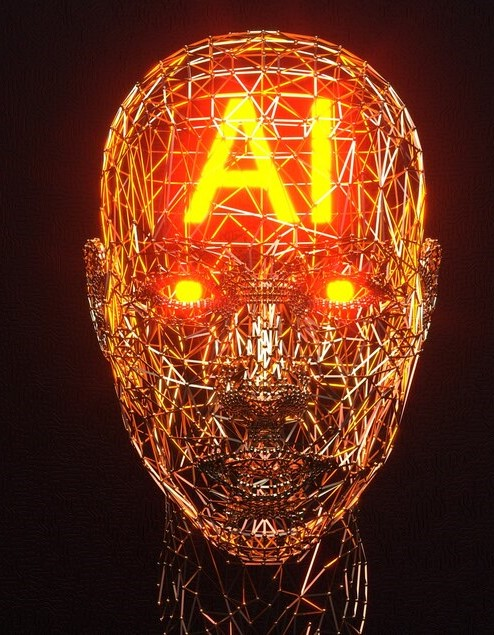
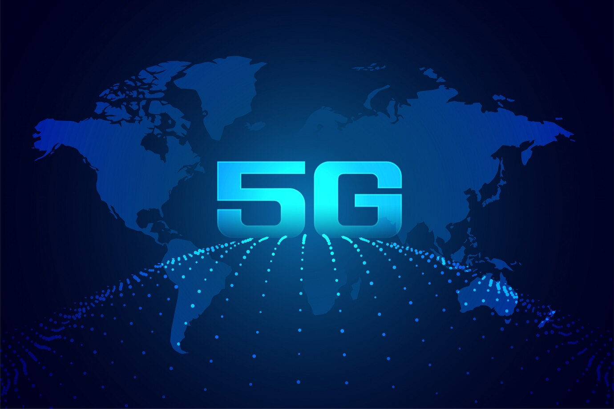

1.Artificial Intelligence (AI) and Machine Learning (ML):
Artificial intelligence (AI) is a way to make computers smart and able to do things that normally only humans can do, like learning, figuring things out, and making choices. Machine learning (ML) is a subset of AI that involves the use of algorithms and statistical models to enable computers to learn and improve their performance on a specific task without being explicitly programmed. ML algorithms are trained using large datasets and can make predictions or take actions based on the patterns and trends identified in the data. These technology trends, such as artificial intelligence (AI) and machine learning (ML), are being used in a variety of industries to improve efficiency and decision-making. Artificial intelligence (AI) and machine learning (ML) are being used in a variety of industries to improve efficiency and decision-making. Some examples of how AI and ML are helping include: 1.Healthcare: AI and ML are being used to analyze medical records, predict patient outcomes, and assist with diagnosis and treatment planning. 2.Finance: AI and ML can help to analyze financial data, identify trends and patterns, and make investment recommendations. 3.Retail: AI and ML can help in personalizing customer experiences, optimizing pricing and inventory management, and improving supply chain efficiency. 4.Manufacturing: AI and ML can also improve production processes, reduce defects and downtime, and improve overall efficiency. 5.Transportation: AI and ML are being used to enhance routes, reduce fuel consumption, and improve safety in the transportation industry. 6.Agriculture: One can use AI and ML to optimize crop management, improve yields, and reduce waste. 7.Education: AI and ML will be able to personalize learning experiences, assess student progress, and provide customized feedback.
2.Internet of Things (IoT)
The Internet of Things (IoT) refers to the growing network of physical objects connected to the Internet that can communicate with each other and share data. These connected devices can range from simple sensors to more complex devices such as appliances, vehicles, and industrial equipment. The usage of IoT is one of the emerging technology trends in the electronics and software industry that is revolutionizing the entire human behavior of using technology. IoT devices can collect and transmit data, and they can be controlled and accessed remotely through the internet. This allows for the creation of new products and services that rely on connectivity and data sharing. Some examples of how IoT is being used include: 1.Smart homes: IoT devices such as smart thermostats, security systems, and lighting can be controlled and accessed remotely through a smartphone or tablet. 2.Industrial applications: Monitor and optimize industrial processes, such as energy usage and equipment maintenance. 3.Transportation: Improve safety and efficiency in the transportation industry, for example by tracking the location and condition of vehicles and providing real-time traffic updates. 4.Agriculture: Optimize crop management, improve yields, and reduce waste. We can say the IoT is changing the way we interact with the world around us and is enabling the development of new products and services that rely on connectivity and data sharing.
3.5G
The deployment of 5G networks, a key technology trend, is expected to accelerate in the coming years, bringing faster speeds and lower latency to mobile devices. 5G, a significant technology trend, is the fifth generation of mobile network technology that is designed to provide faster speeds and more reliable connections than previous generations. It is a wireless technology that operates in the millimeter wave frequency band, which allows it to transmit data at high speeds over short distances. Some of the key features of 5G include: 1.High speed: 5G networks are now much faster than previous generations, with peak speeds of up to 20 Gbps (gigabits per second). This means that 5G networks can transmit data much faster than 4G networks, making it possible to download and stream high-definition video, play online games, and use other data-intensive applications without experiencing delays or interruptions. 2.Lower latency: Latency is the time it takes for a signal to travel between a device and a network. 5G networks have significantly lower latency than previous generations, with an average latency of around 1 millisecond. This means that 5G networks can respond to requests much faster, making them ideal for applications that require real-time interactions, such as remote surgery or self-driving cars. 3.More capacity: 5G networks can support many more devices than previous generations, thanks to their use of advanced technologies such as beamforming and massive MIMO (multiple input, multiple outputs). This makes 5G ideal for use in crowded areas, such as sports stadiums or city centers, where many devices are competing for network resources. 4.Increased reliability: 5G networks are designed to be more reliable than previous generations, with lower rates of dropped calls and lost connections. This makes them ideal for use in mission-critical applications, such as emergency services or industrial automation. We can say that 5G is expected to revolutionize the way we use mobile devices and connect to the internet, enabling new applications and services that were not possible before.
4.Robotic Process Automation (RPA)
Like AI and VR/MR, Robotics, a notable technology trend, is being developed for a wide range of applications, including manufacturing, healthcare, and transportation. Robotic Process Automation (RPA) is a type of technology that allows organizations to automate repetitive, rule-based tasks by creating digital workers or software robots to perform them. RPA is designed to improve efficiency, reduce errors, and free up human workers to focus on more complex and value-added tasks. We currently haven’t yet processed how big RPA or Robotic Process Automation will become in 2023 as it depends on a variety of factors such as advancements in RPA software and the adoption of these technologies by organizations. However, RPA will likely continue to be a trending technology in 2023 as more and more organizations seek to improve efficiency and reduce costs through automation. One potential area of growth for RPA is in the field of business process outsourcing (BPO). Many BPO providers are already using RPA to automate repetitive tasks and improve efficiency, and this trend will likely continue in the coming years.
5.Autonomous Vehicles

Autonomous Vehicles, a significant technology trend, also known as self-driving cars, are vehicles that can navigate and operate without a human driver. Many companies and organizations are working to bring these vehicles to market. Autonomous vehicles have potential benefits such as increased safety, efficiency, and accessibility. However, there are challenges that need to be addressed before they can be widely adopted, such as technological issues, regulatory issues, and societal issues. Despite these challenges, experts believe that autonomous vehicles have the potential to transform the transportation sector in the coming decades. Adoption may happen gradually, with different levels of autonomy being introduced over time, for example, fully autonomous vehicles in specific environments before they are widely available on public roads. It’s also possible that we will see a mix of autonomous and human-driven vehicles on the roads just as sci-fi movies have been showing the world the futuristic world with flying cars and whatnot.
6.Human Augmentation

Have you heard of human augmentation? It’s a significant technology trend where technology is used to enhance our bodies or minds. This can include things like prosthetics, exoskeletons, or even a connection between our brain and a computer! In the next few years, it’s likely that we’ll see even more advances in this field. For example, prosthetics and exoskeletons might become even better and more easily available, helping people with disabilities do things they couldn’t before. Brain-computer interfaces might let our brains work with computers directly, making us smarter and more skilled. And augmented reality or virtual reality could change the way we experience the world. We think that human augmentation has a lot of possibilities to make our lives better. But it’s important to think about the ethical side too and make sure it’s used in a good way.